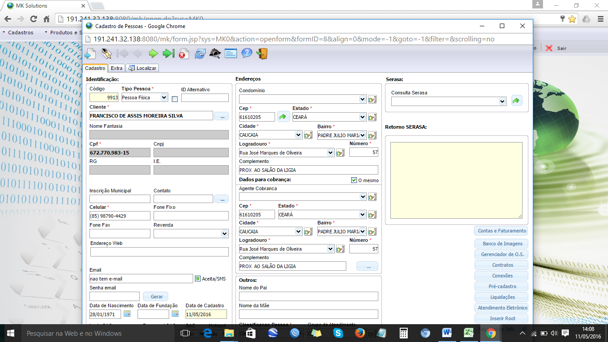
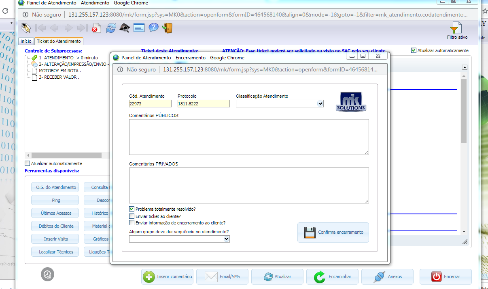

Voltar
Voltar
2 via do carnê e Atualização boleto em Atraso
- Financeiro Agily Telecom (nome + comprimentos)
- Confirmar as informações cadastrais
- Qual o nome do titular do contrato?
- Acessar o mk Solutions a aba, Suporte / Painel de atendimento e serviço/ painel de atendimento
- Na aba Código/ Nome; informar o nome do titular e clicar ok
- Clicar na aba cadastro e confirmar os dados

- Qual Endereço e cep ?
- telefones para contato ( Obs.: Atualizar os números )
- Qual watsap ?
- Qual o e-mail ? (Obs.: Atualizar e-mail ou colocar não tem)

2 via de carnê
Fazer as seguintes verificações:
- Verificar se tem ticket aberto para esse cliente: Na aba painel de atendimento/Atendimento/Histórico/Atendiemnto
No caso ticket aberto informar ao cliente para aguardar o retorno de ligação do financeiro
Importante:
- Se o cliente estiver solicitando uma 2 via por motivo de perda, informar ao cliente que o envio será por e-mail .opção de envio pelo motoqueiro e em ultimo caso ,somente se o cliente insistir.
- Se for renovação de contrato e o cliente informar que não recebeu sua renovação, verificar nos comprovantes de entrega a confirmação do recebimento, caso não tenha , enviar novamente sem custo.
Boleto em Atraso
Se o cliente estiver ligando para obter mais informações sobre a atualização do boleto vencido, passar as seguintes orientações.
Todo boleto em atraso, poderá ser pago em qualquer banco, estabelecimento ou pelo internet Bank. Portanto não será preciso atualizar o boleto
Abertura do ticket:
Após essas verificações, selecionar a aba novo e preencher os campos no painel de atendimento:
Origem do contato= telefônico
Processo = Segunda via de carnê
Informação do cliente = Relatar a solicitação + taxa de entrega Gravar e Iniciar.
Procedimentos de envio por e-mail
- Acessar o cadastro do cliente e no campo e-mail, marca a opção aceita \ SMS e grava
- Em seguida seleciona as faturas em aberto e clica na opção e-mail ,conta e-mail Envio de carne , modelo de e-mail Fatura boleto automático e Enviar Duplicata.

O e-mail será enviado para o cliente com essa Informação.

Encerrar o ticket
- Na aba painel de atendimento/ Seleciona a aba Ticket de atendimento, clica em encerrar e coloca o comentário do atendimento em comentários públicos e Confirmar o encerramento.

Procedimentos de envio por motoqueiro
Seleciona as faturas alteradas, clica na opção PDF ,baixa e imprimi.
Faz a impressão do boleto

Encaminhar o Ticket para O.S,
No painel de atendimento clicar na aba editar/Ticket de atendimento / Encaminhar / Enviar para O.S sim/ Tipo de O.S Segunda via carne e Gravar
Preencher as seguintes informações: em defeito reclamado/ Relatar a solicitação do cliente, taxa de Entrega R$ 5,00,prazo de 24hs, tipo de O.S / Segunda via de carne, Data Ent/ atual , Hora Ent / atual e Gravar
Fazer a impressão da O.S e anexar ao carnê impresso.
Fazer o agendamento
- Em funcionário Associado ao evento/ nome do Técnico, em Titulo/ apagar o nome do cliente e colocar a descrição/ Adequação/ Desmarcar os campos bloquear e Editável, Inicio / data e hora atual, Cor fundo e borda/ Amarelo, cor de texto/ preto e gravar
Encerrar o ticket
- Na aba painel de atendimento/ Seleciona a aba Ticket de atendimento, clica em encerrar, coloca o comentário do atendimento em comentários públicos e Confirmar o encerramento.

Voltar